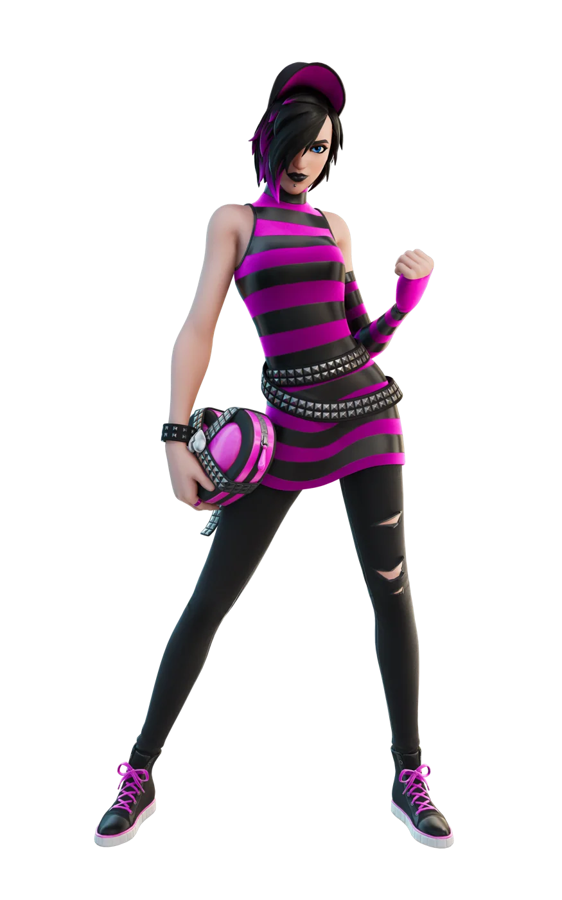

Now building
Video · 16:9
Create Your Project
Video not loading? Watch on YouTube ↗
Forge walkthrough
Design your game, then follow a step-by-step walkthrough - with video - to actually build it.
Simulation & Tycoon › Just give me the basics Brand: KPop Demon Hunters

Video not loading? Watch on YouTube ↗
Instructions